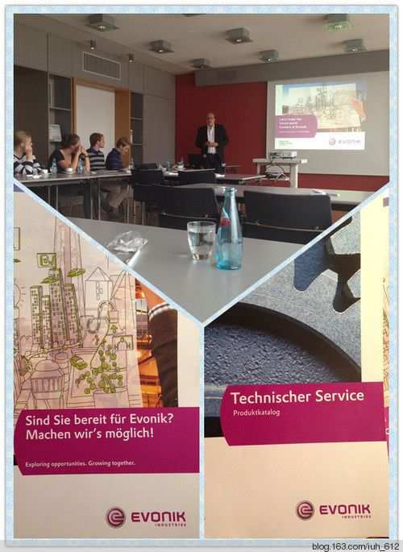
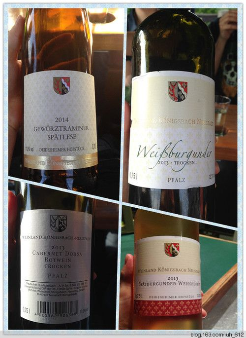
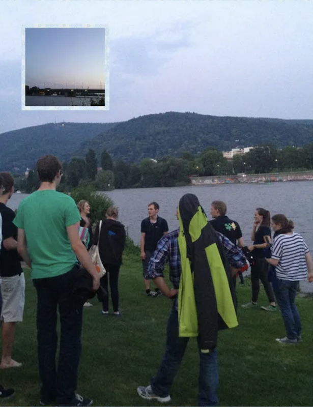
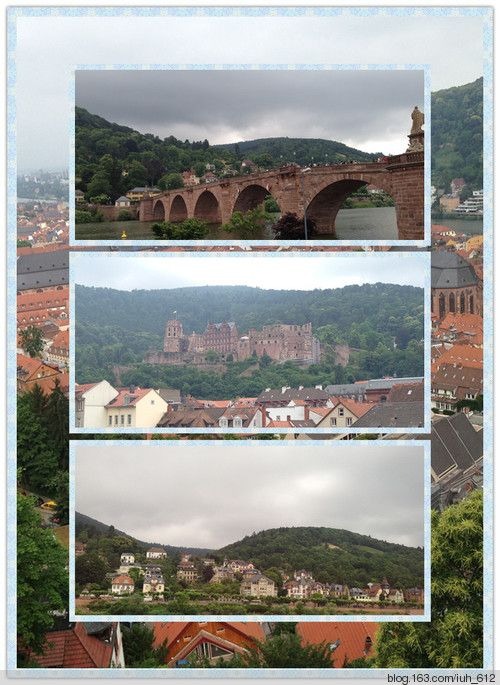
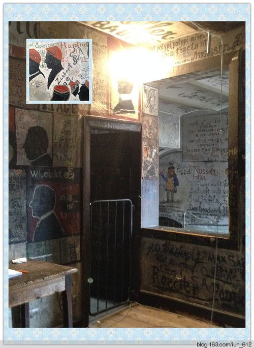
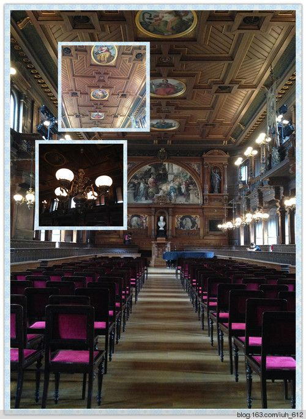

2015-06-01 夏季Exkursion
目录
还记得我上次加入的那个协会ETG吗？她又举行活动啦！这次是为期3天的电气类以及化工类的公司参观。参观的学生一共17个人，这次中国小伙伴比较多，有7个呢！
周四的集合时间是7:00，地点在技术系我们专业楼的后面，所以我5点半就起床了。
首先我们去了Hanau参观第一家公司Evonik（它在中国被称为赢创有限公司），总部在德国爱森，它在化工，能源，房地产都有业务，其中化工是主业务。我们到达公司后，首先去了行政楼的一个会议室，一个穿得正正式式的德国人给我们介绍Evolnik的主要产品。他讲的很认真很有热情，但对于我来说，尽管有PPT展示，却还是有很多都没听懂。后来我翻他们给我们发的产品手册，发现真的有很多专业词汇不认识。大概半个小时后，产品介绍结束了，我们去了他们的工厂参观。因为是化工厂，所以要求每人都戴一副保护眼镜。公司贴心的给我们分成了两组，有两名讲解人员。我们看到了巨大的生产仪器以及生产出来的各种尺寸大小的微小颗粒。最后讲解人员还给我们讲了公司的垃圾处理。
大概下午一点半的时候，我们去了他们公司餐厅的四楼，里面已经给我们准备好了冷餐。吃完饭后，公司的HR开始给我们讲公司的实习岗位，招聘计划，以及工作地点。这个公司在中国上海，台湾和吉林都有工作岗位。下图的下面部分是他们的产品册和招聘宣传册。

参观完Evonik后，我们去了一个葡萄园weinlese，品尝葡萄酒。葡萄园主是一个很可爱的老爷爷，他有一辆很小的观光车，用来带游客去葡萄园里逛逛，吹吹风，喝喝酒。我们总共尝了3瓶白葡萄酒，3瓶红葡萄酒。我最喜欢的是Gewuerzraminer spaetlese，因为最甜。德国小伙伴告诉我，如果酒瓶标了spaetlese，就说明这是甜度高的酒，可以去超市找。喝完酒后，我们去了酒窖还有他家的展览柜参观。不由得说，真漂亮啊。

品尝完酒后，大巴载我们到了海德堡的青旅。晚上9点半的时候，带上在葡萄园买的酒，我们沿着内卡河一直走，走到河边一块大草地上才停下来，大家团团坐下，喝酒谈天。草坪真软啊，一些人把鞋子脱了，光脚踩在上面，一些人直接躺在草坪上，享受大自然的拥抱。轮船偶尔从河中经过，闪着明亮的光。我们就这样一直嬉笑着，到了十一点半才回去。不得不说，这真的是一次从来没有过的美好的经历：这么柔的风，这么软的草坪，这么美丽的河流，以及夜幕中的海德堡和和我同龄的活力无限的年轻人。希望美好永存。

周五上午，我们去了曼海姆的Bombardier公司(中文名是庞巴迪公司)。庞巴迪公司的总部在加拿大，是一家交通运输设备制造商，主要业务是轨道车辆和飞行器制造。庞巴迪生产了德国的很多城际列车，并且和西门子共同研制德国的高铁ICE-3列车。（不过最近有新闻说德国准备大量引进中国铁路技术，这些技术由中国南车和北车提供。真是令人激动啊！）庞巴迪公司的参观也是分为3个部分：产品介绍，参观生产车间以及职业介绍。这个公司不允许拍照，所以我除了公司发的3个小册子之外没有任何影像资料。
下午，我们去了位于卡鲁的EnBw能源公司（没找着中文名）。这家公司位于黑森林中部，它的主要能源是天然水资源。我们先听了这家公司的历史，产品和发展，然后去工厂看了很多很大的水泵（内部依然不准拍照我只拍了外面的情况），最后去了黑森林地区最大的蓄水坝Schwarzenbach-Talsperre（当然也是由EnBw公司建造的）。这个大坝建的很雄伟，整体呈青灰色。这种颜色多在其他城市的古老的教堂外侧见到，充郁着浓厚的历史气息以及欧洲感。我们登上大坝，发现有明信片出售，一查才发现这是一个旅游景点，人们喜欢来这儿划船和徒步。
晚上我们去了曼海姆的国际青年旅舍。两座城市的青旅相比，海德堡的青旅浴室里有为老人专门设计的扶手，早餐很丰盛。但曼海姆的青旅浴室和洗手间是分开的，更加方便，体验更好。
周六上午，我们又去了海德堡，放半天假。我们可以自己到处游玩。我们去了海德堡城堡，老桥，海德堡大学博物馆和学生监狱。海德堡真的太浪漫了，有青山有流水有美妙的老街，绿色是绝对的主色，让人心旷神怡。最后我买了个小礼物准备带回去给爸妈看，希望下次我可以带他们来这么浪漫的地方。

在纪念品市场逛了逛。有个歪果仁在看日语书。他前面的牌子上用五种不同的语言写着“我会说英语/西班牙语/葡萄牙语/法语/中文”，当然他还会说德语啦。这样一来他就会说7种语言了。这么敬业太让人佩服了！我的小礼物就是在他家买的。
从老桥下来，我们去了学生监狱。不得不说的是，海德堡大学的学生监狱是一个很有意思的地方。这个学生监狱并不是真正意义上的学生监狱，而是因为学生调皮捣蛋但是警察又不能把他们关到警察局而特意设立的学生禁闭处。这个监狱最神奇的地方在于无处不在的涂鸦和文字。我进去的时候，不由得惊叹，太有创造力了！

下图是海德堡大学的旧礼堂，很庄严。两边的座位上写着四大系哲学、神学、法学和医学中著名的学者的名字。天花板用人物像装饰着。 
下午，我们去了Sinsheim Auto&Technik Museum（Sinsheim汽车&技术博物馆）。博物馆主要展览有历史的汽车以及火车，还有少数伴随着汽车而改变的服饰展览。
看到有IMAX 3D影院，我们很兴奋。于是我和小伙伴在影院看了关于鲸的3D纪录片，但是很无聊，最后我睡着了。
馆外面的半空中停着各种各样的飞机，人们可以进去看一看飞机内部。
汽车的展区有不同时代的汽车。不同的车代表着不同的历史，但是与之相对应的服饰也是反映这段时期大家的品味的。车与人要搭配，才不会负了车也不会负了人，才有味道。
后来，我们就回家啦。累呀累呀~~